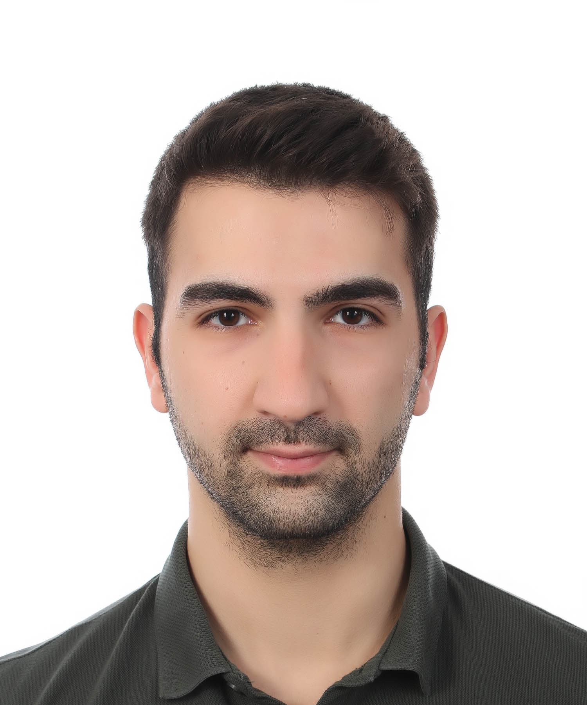
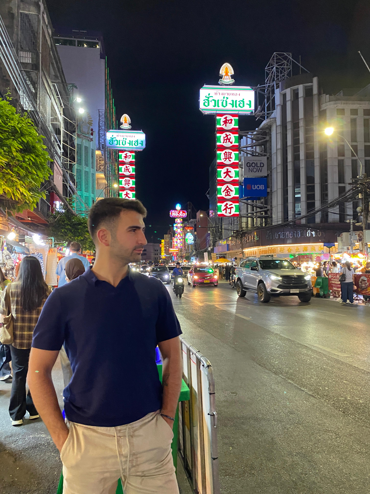

Photo 1
Photo 2 Photo 4
Photo 4
 Photo 5
Photo 5
About Me
Beyond the
blueprints.
I'm Sarp — 26, Istanbul-born, and genuinely enthusiastic about being alive.
I'm the kind of person who'll randomly smirk in the middle of the day because a good memory surfaced. I carry a lot of gratitude for the life I have, and I think that shows.
Curiosity is probably my defining trait. I find myself drawn to science, psychology, history — the big questions about how humans think, why societies move the way they do, and how much is still left to discover. I'm also deeply into fitness, snowboarding, sailing, and architecture. Not as hobbies I casually mention — as things I actually go all in on.
I love conversations that go somewhere real. Whether someone's talking about their passion or just telling a story, genuine expression is something I find endlessly interesting. I'm outgoing, direct, and I'll match your energy if you bring it.
Ambition is a big part of how I'm wired. When something catches my attention, there's no halfway — I commit, I push, and I figure it out. Testing limits isn't something I do reluctantly; it's something I actively seek out.